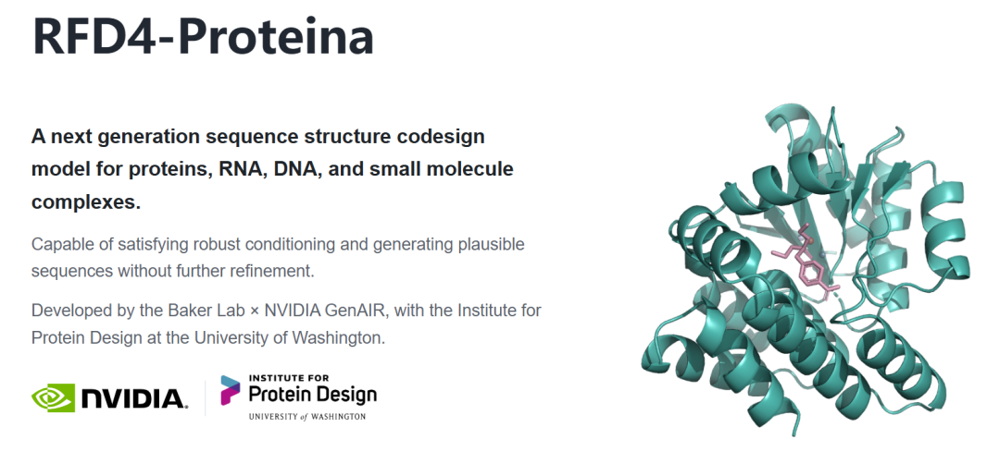
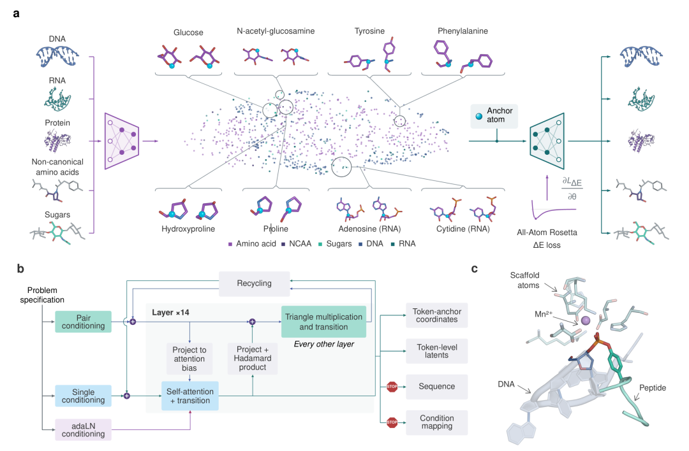
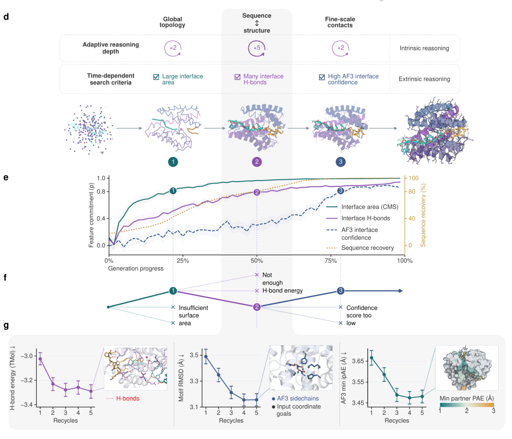
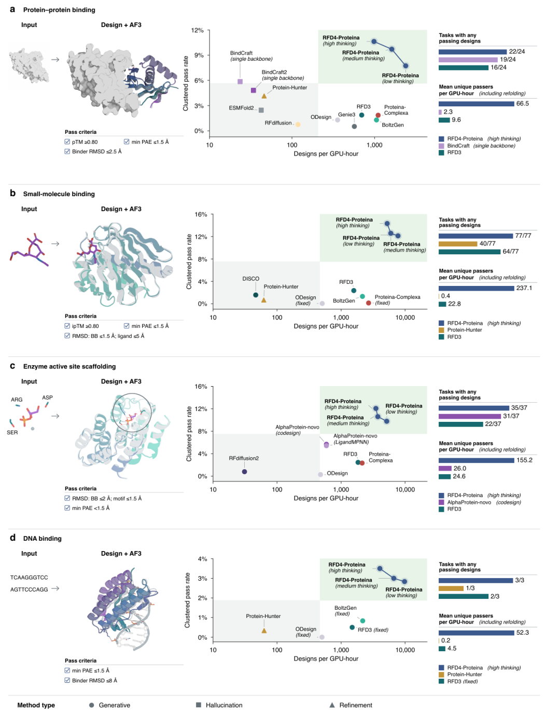
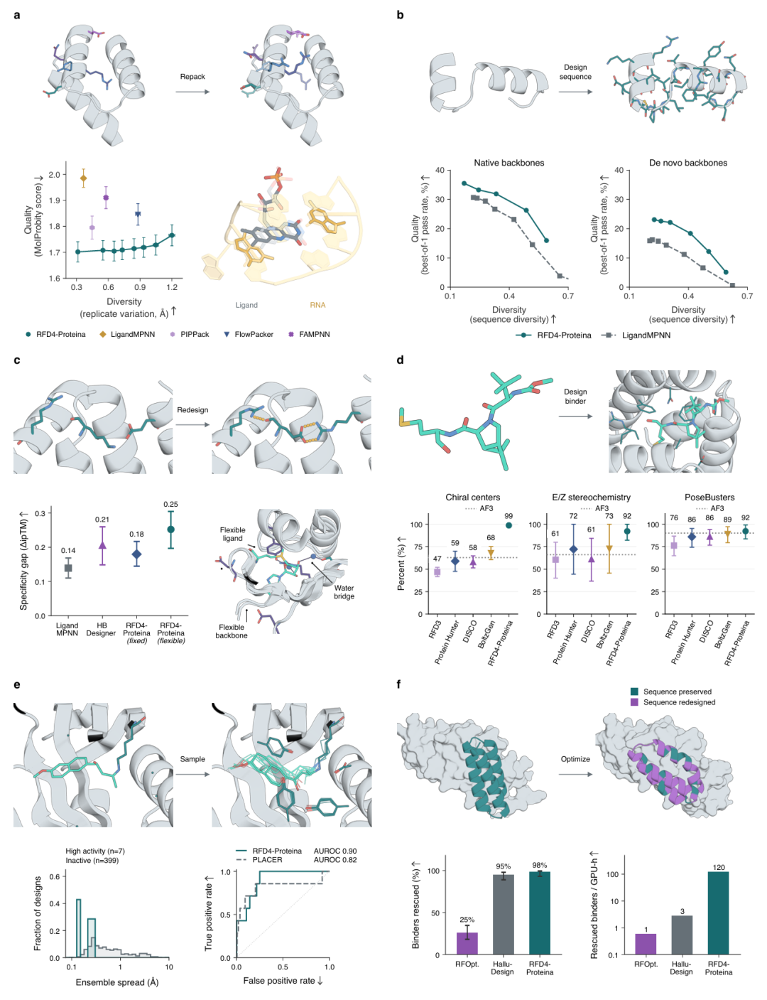
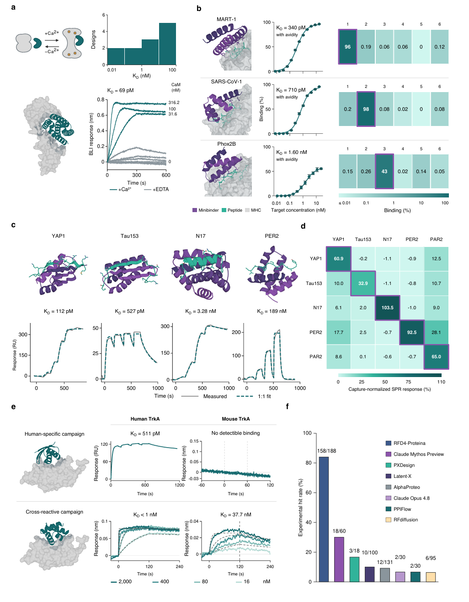
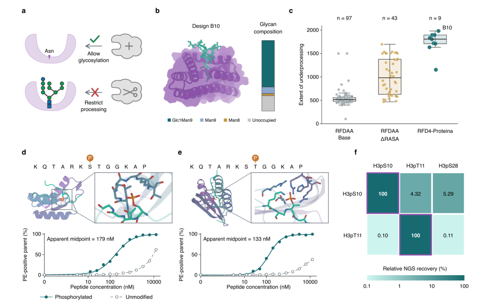
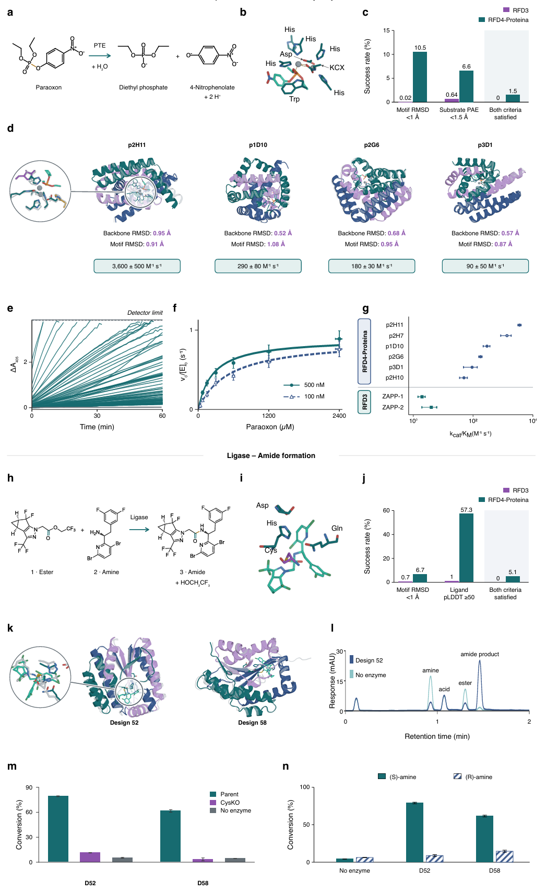

10 月 21 日公开的《Biomolecular design through latent reasoning with RFD4-Proteina》，由华盛顿大学蛋白质设计研究所与 NVIDIA 的研究者合作完成。文章很长，正文连同补充材料超过一百页。我读下来最关心的是，RFD4-Proteina 将分子身份、三维构象和设计时的筛选放进了一套流程，想减少这些步骤之间互相打架的机会。

这篇论文有大量计算比较，也做了结合、糖基化控制和酶催化的湿实验。它已经证明了几类有意思的功能；论文中的高通过率仍需按各自的测试任务理解，不能直接换算成新项目的实验命中率。
用 RFD3 做设计时，一个熟悉的流程是先生成满足原子级约束的结构，再交给 LigandMPNN 等工具设计序列，最后拿结构预测模型重新检查。RFD3 已经能处理蛋白与小分子、DNA 等对象之间很细的接触，甚至可以一起采样配体或 DNA 的构象。可结构生成得再漂亮，下一步设计出的序列能否把它撑住，仍要另过一道关。
这里的版本号容易让人以为只是同一个网络逐年加功能。实际方法有两条技术线汇到 RFD4。一条是 RFdiffusion 系列逐渐把约束写到原子级，另一条来自 La-Proteina 和 Proteina-Complexa，尝试在连续潜在空间里同时生成序列和结构，并在推理时搜索更合适的候选。
初代 RFdiffusion 最擅长的是从少量结构约束长出一个蛋白骨架。要做结合蛋白，给定靶标界面；要搭活性位点，给定局部基序。结构有了，通常再用 ProteinMPNN 找能折成它的序列。问题出在催化中心。如果设计要求精确到某个侧链末端原子，而输入仍主要是主链片段，研究者得先决定这个残基落在序列哪里、选哪种侧链构象，再让模型围绕它长骨架。
RFdiffusion2 把这一步往前推了。它允许直接给出催化功能基团的原子坐标，部分残基甚至不用预先指定序列位置。模型可以自己寻找一组骨架，把这些原子摆到要求的位置。中间还有 RFdiffusion All-Atom，让蛋白围绕小分子生成。到 RFD3，设计对象进一步覆盖蛋白侧链和外部环境的全原子坐标，论文已经展示了蛋白与 DNA、柔性小分子构象的共同采样。这些进展解决了越来越细的几何问题。
几何细了，序列与结构分开的代价更容易显出来。RFD3 的设计仍常用 LigandMPNN 为生成结构补序列，之后再预测结构作检查。如果 LigandMPNN 为提高自身评分换了几个侧链，最初约束的氢键和催化几何可能跟着变。RFD4 想让残基身份和局部构象在生成途中反复互相调整。
这部分思想也来自另一支工作。Proteina-Complexa 已经做过序列与结构共同生成，也用推理时搜索把生成轨迹往指定指标上推。不过它主要使用蛋白专用的表示，交互对象通常按固定构象处理。RFD4 扩展到修饰氨基酸、糖和核酸等化学组分，并把可变构象、共同生成与搜索放进同一模型。因此，RFD4 的版本号能帮助我们定位进展，却不足以说明完整的方法来源。
RFD3 的强项是显式处理原子。化学细节足够丰富，代价是每个设计都要在很大的坐标空间里寻找可行解。RFD4-Proteina 对标准与修饰氨基酸、糖以及 DNA、RNA 的核苷酸采用另一种表示。每个单元保留一个锚定原子的坐标，比如氨基酸的 Cα，再用 32 维潜在向量压缩它的化学身份与局部原子构象。其他类型的分子组件仍保留显式原子身份和连接关系。
随后，flow matching 模型共同生成这些锚点坐标和潜在向量，解码器把它们还原为序列和全原子结构。这样一来，序列不再只是骨架生成后的填空题。某个残基选什么、侧链怎样摆、附近分子怎样靠近，至少在模型的生成过程中可以互相影响。
作者用潜在向量中的邻近关系做了一个很直观的检查。RNA 核苷酸在 99% 的情况下最接近相应的 DNA 核苷酸；修饰氨基酸最接近未修饰母体的比例只有 44%。这说明模型学到了一部分合理的化学关系，同时也提醒我们，潜在空间中的距离不能直接当作反应性或可替换性的尺度。对非天然氨基酸项目尤其如此，某两个点挨得近，并不保证表达、稳定性和活性也相近。
潜在表示容易带来一个担心，解码出来的原子会不会只在视觉上像个分子。作者用可微分的 Rosetta 能量监督解码器训练。与仅用重建损失相比，加入能量监督后，平均 Rosetta 能量每残基降低 1.07 kcal/mol，严重键角偏差减少 62%。这些是重建与几何质量指标，还不能说明对应蛋白已经有更好的结合或催化活性。论文还用 TMol 提供的可微能量，在生成过程中引导轨迹，并把能量作为搜索候选的评价量。力场由此参与了生成阶段的调整。
架构上还有两个值得记住的改动。网络增强了成对特征的表达，并定期加入 triangle multiplication，使一个残基与另一个残基的关系能借第三者传递几何信息。另一个改动是把 recycling 放到每个去噪时间步内部。模型在生成到某一步时，可以多看几遍当前构象和序列的配合情况，再继续往下采样。
这里的 single 特征描述单个分子单元，pair 特征则追踪它与另一个单元的关系。口袋里一个侧链朝向配体，往往同时牵动邻近残基的位置，因而只更新单点特征不够。作者在消融实验里看到，加入 triangle multiplication 后，锚点位置误差下降约 9.7%，潜在向量误差却变化很小。这个差异支持它主要改善全局几何组织的解释。作者还把 single 到 pair 的更新由简单相加改成逐元素相乘，计算测试中的结构复原和通过率也有所改善。
训练数据同样变了。论文混入物理模拟得到的合成样本、结构预测蒸馏数据，并刻意采样接近实际设计问题的条件。例如把蛋白口袋中某些侧链末端原子当作位置约束，训练模型在缺少大量真实酶复合物数据时仍能练习活性位点搭建。还有一项名为 explorative modeling 的训练办法，每个例子用四组独立噪声各跑一次，只让损失最低的候选参与参数更新。缩小规模的消融测试显示它在多数任务上有效，原子级酶位点基准则没有同样获益。RFD4 的成绩因此来自表示、数据、网络与采样的共同改变，不能全归给新增的“thinking”。

配图结论 RFD4-Proteina 用锚点坐标加潜在向量共同表示多类生物分子，并在生成过程中让序列、构象和成对几何约束相互更新。
论文把两种机制称为 intrinsic reasoning 和 extrinsic reasoning。这里的 reasoning 可以理解为把更多计算分配给难处理的设计步骤，并不是模型像人一样在文字里推演反应机理。
内层机制是刚才提到的反复修正。每个去噪时间步可以运行不同次数的网络更新，在有用的阶段多花计算。作者把这种预算分成 low、medium、high thinking。以蛋白结合计算测试为例，三个设置的聚类通过率依次为 7.7%、9.7% 和 10.6%；每 GPU 小时的生成数则从 low 的 2388 降到 high 的 986。多算几遍换来更高的单次通过率，吞吐量也会下降。
外层机制是在多条生成轨迹之间做搜索。论文中的一个示例是设计识别肽与 DNA 共价连接处的酶。作者观察到，界面面积在较早阶段就能判断大致好坏；氢键网络要到中期才逐渐稳定，AlphaFold 3 的界面置信度又来得更晚。于是早期先淘汰接触面积不足的轨迹，中期再看氢键，晚期才调用更贵的预测指标。在这个计算示例中，按时间安排筛选，使每 GPU 小时得到的独立通过设计约增加三倍。论文没有用这张示例图证明该酶已经在实验里切开了连接键。
Figure 1e 给了这个安排的依据。作者把中途生成的结构继续跑完，再比较当时的指标能否预示最终结果。界面面积与终点的相关性较早就达到约 0.8，氢键大概要到轨迹过半，AlphaFold 3 界面置信度要到更靠后的位置才有类似预测力。序列也并非开头就定好，在生成进度约四分之一到三分之二之间，与最终序列的一致率从约 50% 上升到 97%。这段窗口里，模型一边确定残基身份，一边修正局部接触。用同一把尺子从头筛到尾，很难充分利用这种先后差异。
这套安排挺符合研发直觉。许多设计在进入精细筛选前，粗略接触就已经站不住；但过早用晚期指标淘汰候选也可能错杀。具体什么时候看哪项指标，仍要按任务调整。论文同样指出，在简单任务或所有指标都很晚才稳定的任务上，搜索的额外开销可能抵消收益。

配图结论 不同设计指标在生成轨迹中的稳定时间不同，RFD4-Proteina 据此安排反复修正与分阶段筛选。
作者把 RFD4-Proteina 放在蛋白结合、小分子结合、原子级酶位点搭建和 DNA 结合四组任务中比较。主要指标是生成序列经 AlphaFold 3 重新预测后，是否满足结构一致性和任务特定阈值，再按结构簇去重。它比只数通过的样本更严格，但归根结底仍是计算筛选。
这组基准覆盖 24 个蛋白靶标、77 个小分子靶标、37 个原子级酶位点任务和 3 个 DNA 靶标，每个靶标按 200 次原始生成尝试统计。所谓聚类通过率，是每个靶标独立通过结构簇的数量除以 200，再对靶标取平均。作者用 Foldseek 按结构相似性聚类，去掉大量长得相近的通过者。一个方法如果反复交出同一种好看的界面，原始通过数可能很高，真正可供实验挑选的结构类型却没有增加。论文把“独立通过结构簇每 GPU 小时”单独列出来，正是想把质量、多样性与算力成本放在同一个框架里看。
在统一重测的小分子结合任务上，RFD4-Proteina 的聚类通过率为 14.3%，RFD3 为 2.4%，RFD4 的生成吞吐量也更高。蛋白结合任务中，high thinking 版本达到 10.6%，作者报告的下一名 BindCraft 为 5.9%；原子级酶位点搭建达到 12.1%，下一名 AlphaProtein-novo 为 5.7%。DNA 任务的 RFD4 数值是 3.5%，RFD3 固定 DNA 构象的版本为 0.5%，这里的构象设置并不相同。把后续 AlphaFold 3 评估时间算进去，RFD4 在四组任务的独立通过结构簇产出上，比各组下一名高 5.0 至 10.4 倍。
覆盖率比均值更能提示方法的用途。小分子任务中，RFD4 在 77 个靶标上都拿到至少一个计算通过设计，RFD3 为 64 个；原子级酶位点任务中对应为 35/37 与 22/37。换句话说，提升不只来自少数容易靶标上反复产出。至于那个长期困住项目的具体难靶点能不能解决，仍要看它的化学环境和输入约束是否落在模型能处理的范围内。
我会认真看这些数字，但不会直接把它们读成湿实验成功率。不同工具原本的设计流程、内部候选数和计算开销并不一样；论文尽力统一了最终评价口径，也规定每次原始尝试最多只有一组骨架与序列进入最后的 AlphaFold 3 测试。这个基准说明 RFD4 在作者设置的任务里更有效率，尚不能替代每个新靶点的实际测定。
还有一组消融实验比较直观。同样用 RFD4，允许小分子配体与设计蛋白一起调整构象时，计算通过率由固定配体构象的 8.1% 升到 14.3%。这支持一个很实际的判断。配体如果本来就能转，设计时把它锁成单一构象，可能会把本该找到的结合方式排除掉。不过这组数字比较的是 RFD4 自身的两种设置，不能拿来证明 RFD3 从未处理柔性配体。

配图结论 在论文统一设置的计算基准中，RFD4-Proteina 同时提高了独立通过结构的比例和单位计算量产出，小分子任务与 RFD3 的差距尤其明显。
Figure 2 比的是从头设计。Figure 3 换了个角度，问同一个模型能否做过去通常交给专门工具的几件事。我觉得这部分对现有 pipeline 的影响，可能比“又多了一个生成模型”更具体。
先看侧链重排。给定序列和骨架，让模型重新安排侧链，RFD4 在 114 个 PackBench 靶标上的平均 MolProbity 分数为 1.70；在相近构象多样性下，LigandMPNN 为 1.99，分数越低代表结构几何越好。它还能在一个 RNA 适配体与小分子的复合物示例里，同时调整 RNA 碱基和柔性配体的构象。这展示了统一表示能覆盖的对象，但单个复合物示例不能概括全部 RNA 或配体任务。
再看固定骨架序列设计。作者分别取 156 个训练中未见的天然骨架、340 个 RFD3 生成的酶骨架，为每个骨架设计多个序列，随后用不带 MSA 的 AlphaFold 3 回折。在相近序列多样性下，RFD4 生成序列的通过率高于 LigandMPNN。这里比较的是回折到指定几何的能力；表达量、可溶性和催化活性，还需要另外测。
作者随后允许骨架局部移动，并在界面上用 TMol 氢键能量引导搜索。在 13 组有目标和非目标对象的设计问题里，模型预测的平均特异性差值从固定骨架方案的 0.18 增至柔性骨架方案的 0.25，指标是 AlphaFold 3 的 ΔipTM。我比较喜欢这个测试的提问方式。很多界面差异细到侧链转角与主链轻微让位，固定住骨架再挑序列，有时会错过更合适的氢键组合。不过 ΔipTM 是预测分数，Figure 3c 本身没有证明实验特异性同步提高。
还有一个常被蛋白设计文章略过去的问题，配体的立体化学能不能在生成与回折后保持。作者挑了 43 种不在各被测模型训练集中的配体，检查设计复合物对手性中心、双键顺反构型和 PoseBusters 物理合理性规则的遵守情况。RFD4 的三项通过率依次约为 98.8%、92.2% 和 92.3%，都高于文中比较的方法。若配体的一个手性中心翻了，蛋白口袋即使预测得非常自信，针对的也可能是错误化学实体。这是我觉得 Figure 3d 特别值得留下的一张图。它测的是结构与化学约束是否守住，仍不等于配体一定结合得上。
Figure 3 的后两项还提醒我们不要把计算“修好”误当作实验“救活”。用已知逆醛缩酶做回顾性分析时，RFD4 的构象集合离散程度区分高活性与失活设计，AUROC 为 0.90；被比较的 PLACER 为 0.82。这组数据只有 7 个高活性和 399 个失活设计，属于回顾性排序。另一项测试对 102 个没通过新结构筛选的旧 binder 各尝试六次，RFD4 在计算中“救回”100 个，HalluDesign 为 97 个，RFOptimization 为 26 个。所谓救回，仅指通过后续计算过滤；这些设计没有因此得到新的实验结合证据。

配图结论 RFD4-Proteina 在序列回折、立体化学保持和设计修复等下游计算任务中表现出可用性，但图中通过的仍是各自定义的计算关卡。
计算图后面，论文没有停在模型自洽。实验部分做了多种结合任务，其中我比较在意状态依赖和近亲靶标选择性。
钙调蛋白会随 Ca²⁺ 结合改变构象。作者测试了 18 个设计，其中 12 个对含钙状态的表观结合亲和力优于 1 µM，在去钙条件下没有检测到结合。这里的重点是识别特定构象状态，而不只是把同一个靶标结合得更紧。对做蛋白 binder 的项目来说，这种状态区分常常比单个最低 KD 数字更接近实际需求。
论文报告的最紧 binder 表观 KD 约为 69 pM，不过这个极低数值受仪器能够分辨的最慢解离速度限制。读它时，我会先记住“含钙时有强结合、去钙后检测不到”这个经过对照支持的现象，再看具体 pM 数值。状态依赖的设计也提示一个实际问题，若项目靶点在细胞内外有多种构象，前期把哪一种结构交给模型，会直接决定筛出来的是哪类 binder。
TrkA 的结果也值得读，但要看分母。针对人 TrkA 的两类设计合计测试了 188 个，158 个达到亚微摩尔结合。作者进一步展示了人源特异性设计，以及能同时结合人和小鼠 TrkA、避开相关受体的设计。Figure 4f 还比较了其他设计方法的实验命中率，我更愿意把 158/188 理解为这一组目标和实验条件下的结果，不拿它代表 RFD4 对任意新靶点的普遍命中率。
这两类 TrkA 设计其实在回答不同问题。人源特异性那组希望避开小鼠 TrkA 以及人 TrkB、TrkC；作者对其中最强的四个 binder 做了脱靶测试，未检出与这些对象结合。跨物种那组希望同时识别人和小鼠 TrkA，还要避开 TrkB、TrkC。94 个设计中有 18 个呈现期望的结合模式，展示的代表分子对人 TrkA 达到亚纳摩尔，对小鼠 TrkA 的 KD 为 37.7 nM。研发中选哪一种模式，要看后续模型动物和疾病场景，不能只追求一个最大的总命中率。
此外，论文展示了肽 MHC 复合物、无序肽 YAP1 和 Tau 等对象的结合。肽 MHC 的表观亲和力来自多价四聚体染色，不能与单价结合实验测得的 KD 混在一起排榜。对研发判断更有用的是，作者还测了相近肽的交叉反应，试着回答识别是否落在目标肽本身。
在肽 MHC 任务里，三个展示的靶肽分别来自 MART-1、SARS-CoV-1 和 Phox2B，作者又加入其他肽作交叉筛查。部分脱靶肽与目标肽只差一两个残基，三组设计都表现出超过百倍的目标偏好。这比只测目标肽有信息量，但仍只覆盖论文列出的那一小组脱靶肽。
无序肽的情况也类似。作者共尝试八种无序肽，既有结合后倾向形成二级结构的，也有缺少这种倾向的，每一类除一个对象外都得到了紧密结合者。针对 YAP1 和 Tau 片段，作者用 SPR 测得代表性设计的 KD 分别为 112 pM 和 527 pM，并用五种无序肽做交叉测试。每个 binder 对预期目标的响应都更高，具体区分幅度却并不一样；无序靶标尤其需要关注这一点，因为它们缺少固定的整体形状替结合特异性兜底。Figure 4d 每一格只有一次配对测量，若将其作为候选推进依据，还需要更完整的交叉反应和重复测定。

配图结论 钙依赖结合、肽 MHC 与无序肽识别、Trk 家族选择性展示了实验层面的靶标区分，同时各项亲和力和交叉反应的测定口径并不相同。
RFD4-Proteina 将糖与修饰氨基酸写进同一套表示，论文也选择了能检验这些能力的实验。糖基化项目并非简单让蛋白“粘住糖”。糖链先接到 Asn 上，随后还会被细胞内的酶逐步修剪。设计目标是让蛋白遮住靠近 Asn 的 GlcNAc 核心，阻止后续加工，同时让外侧甘露糖仍然暴露。如果遮得太严，末端也不可及；如果遮得不够，糖又会继续被修剪。这里同时有几何、化学和加工过程的约束。
作者过去用 RFdiffusion All-Atom 路线得到过 Man5 至 Man8 等寡甘露糖形式；这次的代表设计则以 Man9 和 Glc1Man9 为主，意味着加工被拦在更早阶段。LC-MS/MS 测了糖型组成，九个 RFD4 设计里，八个在已占据位点的检测结果中显示超过 90% 的寡甘露糖，设计蛋白还比先前路线所需的更小。这里我会把结论停在“改变了糖链加工状态”。论文并没有用 Figure 5 证明疫苗免疫效果，更不能把质量分析中的糖型比例当成任何体内效应。
磷酸化识别项目则分别针对组蛋白 H3 尾部相邻的 pS10 与 pT11。相邻位点识别难在周围氨基酸序列几乎不变，区分依赖磷酸基所在的位置，以及它与附近残基形成的局部接触。Figure 5d、5e 用成对滴定比较磷酸化肽与未修饰肽，Figure 5f 又把目标 pS10、pT11 和另一条 pS28 肽放在一起做测序读数。代表设计各自偏向目标位点，对相邻磷酸化位点也保留选择性。这个结果比一句“可以设计磷酸化 binder”有信息量，因为它检验了最容易混淆的近邻位点。
不过，Figure 5f 是各条件下所选细胞群的测序深度归一化回收比例，不能直接读作结合常数。对真实项目来说，位点选择性还应放回完整蛋白及其实际修饰背景中验证。论文展示的是一组有力的设计与实验例子，尚没有把所有潜在交叉反应都排干净。

配图结论 糖型质谱和相邻磷酸化位点的对照读数，分别支持 RFD4 设计对糖链加工与修饰位置的实验控制，但两者验证的功能不同。
酶设计部分给了最接近 RFD3 的正面比较。双金属磷酸三酯酶任务要求支架放准八个催化残基，其中还包括经过氨甲酰化修饰的赖氨酸，并协调两个锌离子。为什么这个测试难？普通 binder 只要界面足够稳定，就可能拿到结合信号；催化需要多个残基和金属位点在同一个口袋里协作，底物摆放也得允许反应发生。一个侧链位置只差一点，预测结构看着仍可能不错，活性却可能直接掉下去。
在共同的结构筛选条件下，RFD4 的 1000 个候选有 15 个同时满足催化基序 RMSD 与底物置信度两项标准，RFD3 的 10000 个没有一个同时通过。湿实验接着测了 RFD4 的 288 个设计，其中 89 个显示活性，分布在 47 个候选支架家族中的 25 个；RFD3 在相同八残基任务的 192 个设计中没有活性命中。这里的价值不只在 89 这个数字。活性跨越多个支架家族，说明结果并非单一骨架偶然幸运，也给后续挑选可表达、易改造骨架留出了空间。
作者进一步表征了其中六个设计。最佳设计的 kcat/KM 为 3600 ± 500 M⁻¹ s⁻¹，kcat 为 0.9 s⁻¹，相比未催化反应的速率提高约 1500 万倍。kcat/KM 反映稀底物条件下的催化效率，单看“提高多少倍”容易忽略绝对数值，因此两个量都值得放在文中。论文还显示，这六个经过表征的 RFD4 设计，比此前 RFD3 六残基任务的活性酶高约 10 至 1000 倍。这个跨论文比较能帮助感受量级，但由于催化基序从六残基扩到八残基，严格方法对照仍应优先看前面同一八残基任务的结果。
这个对照比仅比较两代论文摘要中的最高活性扎实得多。它使用了同一类更复杂的八残基设计问题，也接上了实验读出。不过，RFD4 的优势由训练数据、表示、网络和采样策略共同贡献，不能将 89 比 0 全部归功于某一个模块。作者更早用 RFD3 做过六残基版本，那个活性数字也不该和八残基版本当成完全相同的任务横排。
另一项实验针对 lenacapavir 合成路线中的一个酰胺键形成步骤。这个例子吸引我的地方，是它从断键转到了成键。作者希望活化酯与目标手性胺发生胺解，同时压住与水反应生成酸的竞争路径。若一个设计只会让活化酯消耗，却主要得到水解产物，对药物合成没有多大帮助。评估时得同时看目标酰胺、酸副产物和不同手性原料的反应情况。
67 个 RFD4 设计中有 4 个形成目标产物；作者先前的 RFD3 项目测试 72 个设计没有命中。最佳设计 D52 在终点测定中让目标 S 构型手性胺有 79.0% 转化为相应酰胺，另一设计 D58 为 61.7%。换成 R 构型，二者分别为 8.8% 和 14.6%，无酶对照为 4.3% 和 6.2%。D52 体系里的酸含量为 0.29 mM，与无酶对照的 0.26 mM 接近。催化 Cys 失活后，形成目标产物的能力明显下降。这些对照串起来，才更像是一个有手性偏好、能推动目标成键反应的催化设计，而非色谱图上偶然多出一个峰。
我会把它看成新酶参与药物合成步骤的概念验证。论文没有证明整条药物合成路线已经可由它替代，16 小时的终点转化率也不等同于工业过程的收率、生产率或稳定性。若进入工艺研发，还需要单独评估催化剂负载、放大、杂质和循环使用等问题；这些不能靠本文的结构预测分数回答。

配图结论 同一八残基酶设计任务中的活性命中，以及目标酰胺、酸副产物和催化残基失活的对照，为 RFD4 的功能提升提供了直接实验支持。
我会把 RFD4-Proteina 当作候选生成与局部优化的强工具。目标存在多种相关构象时，结合哪一种状态可能比单纯结合强弱更重要；糖、磷酸化残基或小分子配体的精细接触也适合放进同一模型里考虑。酶设计则可以利用它同时约束催化基团与底物几何。这些方向都有论文中的实验例子可以参照。
真正实施时，先要弄清目标约束能否准确写进输入，哪些原子与构象允许变化，准备拿什么独立实验检验结果。RFD4 的搜索可以接受不同评分函数，这既是自由度，也是风险。若某个分数只能奖励 AlphaFold 3 眼中好看的界面，模型很可能更擅长拿这个分数，未必更擅长解决项目真正的选择性、聚集、表达或活性问题。
若把它放进项目，我会先选结构状态明确、又有独立实验读出的任务，并在相同计算预算与实验口径下和现有 pipeline 比较。倘若 AlphaFold 3 通过率提高，选择性、表达或功能却没有跟上，应该回头检查输入约束与搜索评分。盲目增加采样量解决不了这个问题。
Biomolecular design through latent reasoning with RFD4-Proteina
De novo Design of All-atom Biomolecular Interactions with RFdiffusion3
Atom-level enzyme active site scaffolding using RFdiffusion2
Generalized biomolecular modeling and design with RoseTTAFold All-Atom
De novo design of protein structure and function with RFdiffusion
Scaling Atomistic Protein Binder Design with Generative Pretraining and Test-Time Compute